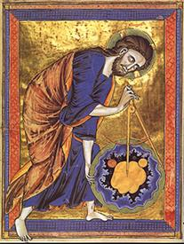
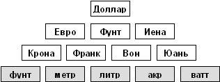
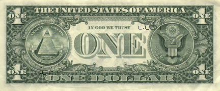
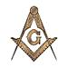
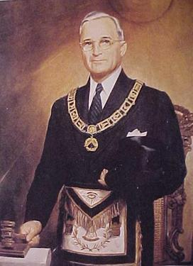

|
На
главную
Глава 4. Возникновение религии денег
Материалистические
условия введения религии денег
В том или ином виде религия
денег существовала везде, где люди почитали деньги и драгоценности.
Но абсолютную власть над миром золотой телец и бог Мамона стали
завоевывать с конца XV
века.
Материалистическая сторона этого
процесса много раз описана в истории как зарождение капитализма.
Давайте перечитаем историю не с точки зрения смены способов производства
и общественных формаций, не с точки зрения «социумов» и «модернов»,
а с точки зрения борьбы противоположных религий.
История бесконечна, и в этой
главе мы сможем обратить внимание только на некоторые ключевые
моменты. Мы посмотрим на историю Европы последних пяти веков под
углом борьбы Добра и Насилия, государства и корпорации, свободы
и рабства, борьбы христианских и антихристианских ценностей за
общественное сознание.
Как нам справедливо повторяет
Запад, Россия сильно отстала в развитии рыночных отношений. Сегодня
в России происходят те же процессы, что происходили во времена
буржуазных революций на Западе 200-300 лет назад. Сравнивая сегодняшний
день с историей, нам становится понятным, что же на самом деле
происходило тогда, и что происходит сейчас.
I.
Одномерная конкуренция в средневековой Европе
Со времён падения Западной Римской
империи в V веке
нашей эры Европа была местом бесконечных внутренних войн. Основу
населения Европы составляли крестьяне. Большинство из них имело
свой участок земли, который давал им всё необходимое для жизни.
Войны велись за владение землями и за подчинение живших на них
крестьян. Римское рабство было отменено, но ностальгия по нёму
осталась.
Во главе Европы формально стоял
святой престол, представлявший волю христианского бога. Во главе
каждой нации стоял король или царь. Государство было, или хотя
бы провозглашалось, большой семьёй своих подданных.
В сознании абсолютного большинства
людей король был представителем бога, и подчинение королю было
неразрывно связано с верой в христианского бога. Власть
над людьми королю давалась богом в процессе коронации.
Существовала прямая личная
зависимость между господином и подданным. Король должен был исполнять
роль защитника и хозяина земель, отстаивать справедливость и закон
божий на земле. Или хотя бы делать вид, что он их отстаивает.
Естественно, что при неограниченной
власти королей возникало немало соблазнов злоупотребления властью.
Защитные войны под разными предлогами превращались в захватнические.
Угон в рабство был запрещён,
разделение труда и промышленность не были развиты. Деньги не имели
большого значения. Поэтому увеличение власти было возможно только
путём завоевания новых земель и живших на них новых подданных.
Существовала одномерная конкуренция за власть – конкуренция
за землю с помощью оружия.
Внутриевропейская конкуренция
за землю была очень сильной, поскольку Европа была замкнутым
пространством. На юге путь в Африку и в Азию полностью закрывали
мусульмане (которые даже захватили Испанию и часть Юго-Восточной
Европы). На западе и севере Европы простирался бесконечный океан.
Агрессии на восток систематически
отбивало Русское государство. Издревле европейские поганые пытались
превратить славян в свою рабочую скотину. Достаточно сказать,
что во всех основных западноевропейских языках слово «раб» – «slave»
происходит от слова «Slav» – «славянин». Европейские поганые говорят «раб», подразумевают
– славянин. Европейские поганые говорят «славянин», подразумевают
– раб.
Постепенно в Европе сложилось
примерное равенство сил. Государства были одинаково организованы
и обладали схожим оружием. Ни одна из враждующих сторон уже не
могла добиться серьёзного успеха. Началось постепенное развитие
ремёсел и кустарного производства. Между странами Европы стала
возникать торговля.
Добрая старая Англия
Среди европейских государств
были более мирные и более агрессивные. Там, где сильнее была центральная
власть, король пресекал внутреннюю вражду. Там, где власть короля
была слабой, феодалы устраивали кровавые войны между собой.
Среди остальных стран Европы
выделялась Англия. Её особенностью были бесконечные завоевания
местного населения чужеземной знатью. Вначале это были римляне,
затем датчане, германцы (саксы) и норманны. Естественно, что знать
захватчиков относилась к местному населению особенно жестоко,
презрительно и высокомерно, и нисколько не заботилась о справедливости.
Сильная центральная власть отсутствовала, и англичане постоянно
убивали друг друга.
В Англии наиболее чётко реализовывался
принцип «человек человеку волк». В силу естественного отбора в
таких условиях выживали только грубые, жёсткие люди с хорошо развитыми
звериными инстинктами и со способностью к безграничному насилию.
На долю англичан выпало мало
удовольствий, им достались далеко не лучшие земли в Европе. Сырой
климат, малоплодородные почвы и холодные туманные болота. Англии
хотелось подчинить себе более тёплые и благодатные земли. Ближайшим
соседом была Франция, куда они и устремились.
Более ста лет, с 1337 по 1453
год, англичане пытались поработить Францию. Во Франции
была сильна центральная власть короля и сильна вера народа в христианского
бога. Отношения между знатью и народом были более дружественными,
чем в Англии. Богом была послана Жанна Д’Арк, которая переломила
войну и изгнала англичан из Франции.
Интересно, что большую часть
войны значительная территория Франции была оккупирована, и французский
наследник престола не мог короноваться в священном для французов
Реймском соборе. Только когда Реймс был освобождён, и проведена
коронация согласно священным традициям, французские крестьяне
признали власть короля законной. Ибо только тогда в глазах народа
бог передал власть королю.
Ничего не добившись Столетней
войной, не имея возможности увеличить свою власть и паразитировать
на континенте, английская знать вернулась на свои болота и принялась
вырезать друг друга. Всего через два года после окончательного
поражения во Франции началась война Алой и Белой Розы. Она продолжалась
тридцать лет, с 1455 по 1485 год, и закончилась почти полным взаимным
уничтожением существовавших феодальных династий. Пожалуй, ни в
одной другой стране мира не было такой кровавой и длительной внутренней
резни.
В результате у наиболее сильных
династий Йорков и Ланкастеров возникло недержание власти, чем
немедленно воспользовались остальные. На короткий срок в Англии
была установлена абсолютная монархия.
Восстановление рабства
В этот момент в истории произошло
великое событие. Европейцы веками искали путь в Индию в обход
мусульманских земель. В 1492 году Колумб открыл Америку. Неожиданно
конкуренция за землю смогла выйти за замкнутые рамки Европы. Более
того, новые земли и народы можно было просто грабить, не встречая
сопротивления.
В том же 1492 году Испания окончательно
освободилась от мусульманского господства. Но она освободилась
только для того, чтобы самой немедленно превратиться в мирового
рабовладельца. Свобода и равенство были Испании не нужны.
Тысячелетия внутриевропейских
междоусобиц не прошли даром. Что европейцы научились делать хорошо,
так это убивать. Миролюбивые и плохо вооружённые индейцы Южной
и Центральной Америки были мгновенно превращены в рабов испанскими
конкистадорами. Поскольку жизнь индейцев ничего не стоила, с ними
обращались хуже, чем с животными. Индейцы массово вымирали на
плантациях и в шахтах, обычно выдерживая не более нескольких лет.
Целые народы и древние культуры, как майя и ацтека, были уничтожены
за несколько десятилетий.
Европейцы настолько преуспели
в уничтожении индейцев, что вскоре им пришлось массово завозить
в Америку чернокожих рабов из Африки, поскольку на плантациях
стало некому работать.
*
* *
Следует отметить, что в истории
России никогда не было ни рабства, ни колоний. Расширяясь,
Российское православное государство брало под своё покровительство
новые земли, нередко с согласия и по просьбе жителей этих земель
(обычно для защиты от турок или европейцев). Народы, входившие
в состав России, получали равные права с остальными её жителями.
В России не было европейской
проблемы вражды в тесноте, поскольку земли хватало на всех. Люди
не воевали между собой, а естественным образом объединялись для
совместного выживания в суровом климате и для защиты от внешних
врагов.
II.
Рабство как причина возникновения капитализма
Из новых колоний стали поступать
дешёвые товары и приходить корабли, полные золота. Знать Европы
сообразила, что через колонии можно получать товары и власть,
не неся никакой ответственности перед местным населением. Знать поняла, что ей собственно и нужны не подданные,
а только производимые ими товары и удовольствия.
Для власти денег и капитализма
это был звёздный час. Чуть ли не впервые со времён Рима товар
удалось полностью отделить от производителя.
Европейцы
убеждают нас, что капитализм и религия денег возникли, поскольку
они были более прогрессивными, повышали производительность
труда и улучшали жизнь людей. Что капитализм естественным
образом возникает с разделением труда.
Капитализм
и религия денег действительно возникли в результате разделения
труда. Только это разделение труда было получено введением
рабства.
Капитализм возник
в начале XVI века.
Научные открытия, которые действительно поднимали производительность
труда, и промышленная революция произошли намного позже. Открытия
Ньютона – двести лет спустя, а изобретение ткацкого станка
– триста лет спустя.
Просто труд
сельскохозяйственного раба в колониях действительно оказался
экономически гораздо более выгодным, чем труд своего христианина.
Раба брали готового и изводили за пять-десять лет. Своему же крестьянину
надо было как минимум кормить детей. Со своим крестьянином надо
было и обращаться по-христиански.
* * *
Разные европейские
страны грабили разные колонии. Им захотелось обмениваться награбленными
товарами. Так возникла развитая мировая торговля.
Сказать открыто,
что мировая торговля вызвана рабством, было всё же непрактично
и небезопасно. Поэтому Адам Смит к 1776 году сочинил английскую
политэкономическую сказку «О свободном рынке». Он «доказал», что
самой природой одни страны и их жители созданы для примитивного
труда, а другие люди – для сложного труда и управления примитивными. А то, что уровень жизни отличается в колонии и
метрополии в сотни раз – это не следствие рабства, а некая объективная,
всемирная закономерность. Невидимая рука рынка.
Надо отметить,
что внутри своего парламента англичане никогда и не стеснялись
собственной царствующей роли над миром. Например, при обсуждении
вопроса об образовательных учреждениях в Канаде (далеко на самой
колониальной из колоний), они пришли к тому, что в обучении канадцев
нет необходимости, ибо всегда найдётся англичанин, который сможет
управлять этой дикой страной.
Само понятие
«политэкономия» происходит от policy,
то есть правил, устанавливаемых человеком, а отнюдь не
от познания законов мироздания.
Там, где появляются товары,
возникает обмен товарами. При обмене товарами нужен общий эквивалент
обмена, то есть деньги. Деньги начинают управлять движениями товаров.
С распространением денег, ширится власть денег. Власть денег входит
в противоречие с властью христианского бога.
Между феодалом и крестьянином
существовала личная и духовная связь, между торговцем и производителем
личной связи не было, между ними были товар и деньги.
Крестьянин
– Бог –
Феодал
Крестьянин
– Деньги –
Торговец
Феодал так или
иначе обосновывал свою власть божьей волей, и для подчинения крестьян
ему необходима была всеобщая вера в христианского бога. Власть
торговцу давали деньги.
В христианские
средние века торговля как занятие глубоко презиралась (хотя и
признавалась необходимой). Церковь напрямую запрещала ростовщичество
как греховное, паразитическое существование. Ростовщичество всячески
каралось, вплоть до сожжения на костре.
Христианский
бог и его моральные заповеди напрямую мешали торговцу, а уж жизнь
потенциальных банкиров и вовсе висела на волоске. Им была необходима
всеобщая вера в новую власть, в нового бога – деньги.
Феодал управлял
крестьянином открыто. Ухудшение или улучшение жизни крестьянина
напрямую связывалось с действиями феодала. Он, конечно, пытался
всё списать на волю божью, но крестьянин видел, откуда исходят
приказы, законы, налоги. Управление посредством денег гораздо
более скрытно. Это позволяло и позволяет денежной власти сильно
критиковать открытую феодальную или государственную власть, при
этом оставаясь в тени и управляя ситуацией через товары и рынки.
Феодал был заинтересован
в том, чтобы количество его подданных увеличивалось. Торговец
был заинтересован только в том, чтобы у него увеличивалось количество
денег. Ему было всё равно, кто производит товар – крестьянин или
раб. Главное – покупать дешевле, а продавать дороже. Христианство
стало объективной помехой.
Свержение христианской власти в Англии
К началу XVI
века в Англии нужда господ в христианстве сильно ослабла. Старая
феодальная знать была истреблена, а власть короля никогда и не
была сильной. Но уже появилась внутренняя торговля. Силу набирали
торговые сословия (джентри), которые получали свою власть не через
владение землёй, наличие поданных и христианского бога, а через
деньги.
Торгуя шерстью с Европой, англичане
стали замечать, что с помощью торговли можно добиться власти тогда,
когда это не удаётся сделать только военной силой.
Англия несколько запоздала на
кровавый пир по захвату колоний – первые наиболее жирные куски
достались испанцам и португальцам. Не имея рабов в колониях, англичане
решили превратить в рабов своё собственное население. Одновременно было необходимо заставить всех подчиняться
власти денег.
*
* *
При натуральном
хозяйстве деньги имеют весьма ограниченную власть. Пока у крестьянина
есть свой клочок земли, он может обойтись без денег и без торговца.
Соответственно, для введения власти денег было необходимо согнать
людей с земли. Здесь интересы жестокой английской знати и торговцев
совпали. Первые получали новую землю, вторые – денежных рабов,
которые вынуждены работать за кусок хлеба, не имея средств к пропитанию.
В XVI
веке произошёл процесс Огораживаний, захвата феодалами земли (по
праву силы) и изгнания с них крестьян. Одновременно были приняты
Законы о бедных, которые отправляли всех нищих (пауперов) в работные
дома, своего рода гибрид тюрьмы и концлагеря. За бродяжничество
клеймили калёным железом.
Законы о бедных
уже исходили из того, что полноценность и правильность человека
определяется не следованием христианским заповедям, а его способностью
иметь деньги, то есть быть в ладах с денежным богом.
У согнанного
с земли крестьянина был выбор – идти в рабство на мануфактуру
или напрямую в тюрьму. Так зарождалась великая английская демократия.
*
* *
Ни о каких технических
изобретениях, которые бы подняли производительность труда, речь
не шла. Английские рабочие начали там же, где закончили римские
рабы – со ступального колеса.
Параллельно
англичане бросились захватывать остававшиеся свободными части
мира – Индию и Северную Америку.
Римская пирамида
Патриций–Плебей–Раб была восстановлена. Только рабы были в основном
вынесены за пределы стран Европы, что было безопасно и приятно.
И удобно для того, чтобы строить рожицу демократии.
Плебеи, бывшие
крестьяне, дрессировались в качестве слуг, солдат, надсмотрщиков
и, при необходимости, – более квалифицированных, чем рабы, ремесленников.
*
* *
Власть денег
сделала христианство объективно ненужным для управления народом,
поэтому его начали быстро ликвидировать.
В 1517 году
священник Мартин Лютер объявил католическую церковь неправильной,
а в 1520 году сжёг папскую буллу, отлучавшую его от церкви. Лютер
среди прочего призвал перестать заниматься поиском духовных благ,
а искать счастья в материальной жизни. Заметим, что это тоже не
было связано с каким-либо развитием науки. До первых открытий
естествознания, до Галилея и Ньютона оставалось более ста лет.
Европейцы ещё не знали даже десятичных дробей. Подробнее о Реформации
мы будем говорить ниже в этой главе.
Немедленно началась
конфискация земель у монастырей и церкви и отлучение (секуляризация)
церкви от управления обществом и государством. Церковные земли
были общенародной собственностью, которой священники временно
распоряжались на общее благо и согласно христианским принципам.
Секуляризация передавала эти общие земли в частную собственность
феодалов, которые использовали её уже исключительно в целях личной
власти, не связанной никакой моралью, и исключительно для личного
обогащения.
*
* *
Естественно, что денежному сословию
была совершенно не нужна и власть короля над собой. Не просуществовав
и 150 лет, абсолютная монархия в Англии была свергнута в результате
буржуазной революции 1640-1660 годов. Власть в стране получил парламент, составленный
из новой денежной иерархии и старой феодальной, которая уже прошла
оцифровку.
Суть
любой буржуазной революции – передача власти от христианской
религии к религии денег.
Власть земельных феодалов сменилась
властью денежных рабовладельцев. Демократия буржуазных
революций – это не попытка жить более справедливо и по совести.
Это удобный механизм баланса денежных интересов, во избежание
конфликта этих интересов между собой, и с целью объединить их
между собой, чтобы эффективнее пограбить третьего.
Король был впоследствии возвращён
на престол, но, конечно, не для управления денежной иерархией
и не для принятия решений. Король полностью подчинялся власти
денег и был удобен для управления той частью народа, которая по
инерции верила в бога и продолжала считать короля своим защитником.
Король стал своеобразной куклой
для общения с народом. Он был очень хорош и на случай войны –
не всякий захочет проливать кровь за власть денег, поэтому войны
лучше вести от имени короля. Такой подход и уводил в тень истинных
властителей Англии и помогал им избежать ответственности в случае
неудачи. Впоследствии тактика видимого сохранения короля применялась
во всех странах в переходный период от христианства к религии
денег.
Короля заодно сделали главой
новонезависимой англиканской церкви, которую отсекли от единой
католической. Саму англиканскую церковь сделали бесхребетной протестантской.
Нет и не может быть такого понятия
как «светская власть». Любая власть держится на вере. Если это
не вера в христианского бога, то надо искать, в какого.
III.
Корпорация как захватническая армия
Для порабощения колоний нужны
были захватнические армии. Использование для колоний государственных
войск было связано с рядом неудобств. Главное из них – вопрос
дележа добычи. В оборонительной войне интересы всех совпадают.
Захватнические войны ведутся только с целью грабежа, поэтому надо
заранее договариваться о том, кто сколько внесёт и кто сколько
получит.
Кроме того, национальная армия
подчиняется королю или правительству, а в захвате колоний хотят
принимать участие частные лица, при этом иметь свободу действий
и не нести ответственности.
Частная инициатива
в грабеже всегда гибче и эффективнее громоздкой государственной
машины. Более того, частные ножи и ружья не связаны глупыми христианским
клятвами.
Наконец, надо было удерживать
оккупированные территории под постоянным контролем, завлекая солдат
из метрополии и нанимая местных охранников.
Для этих целей и были созданы
первые корпорации.
В 1602 году Голландская Корона
учредила Объединённую Ост-Индийскую Компанию (United East India
Company) для управления всем огромным пространством между мысом
Доброй Надежды, южным концом Африки, проливом Магеллана и концом
Южной Америки. Она получила право заключать договоры и альянсы,
содержать армию, захватывать территории и строить крепости.
За два года до этого, в 1600
году, Британия учредила свою Ост-Индийскую Компанию, правда, для
другой Индии – азиатской. Ост-Индийская Компания правила Индией
как своим частным владением до 1784 года. А затем правила ещё
до 1858 года, уже под наблюдением Британии. После чего Индия перешла
под прямой контроль правительства (не индийского; английского,
конечно же).
Итак,
корпорации изначально создавались вовсе не для производства,
и даже не для торговли, а как частные армии для захвата
рабов и колоний.
*
* *
Принцип действия корпорации
очень прост. Внутренняя структура, как и положено захватнической
армии, повторяет структуру обычной армии.
Изначально корпорации назывались
акционерными обществами, joint-stock
company. Само
слово «company»
(компания) переводится с английского языка как военное подразделение,
рота. Корпорация – это рота наёмников, которая снаряжена вскладчину
несколькими денежными феодалами.
До сих пор должности в корпорациях
называются точно так же, как в английской или американской армии:
«officer» (офицер),
«executive
officer» (один
из высших офицеров, обычно второй по должности), «chief
executive
officer» (глава
корпорации, командующий). «Company
officer» буквально
переводится как офицер в чине капитана.
У корпорации, как и у армии,
есть свой устав, жёсткая система подчинения и единоначалия. Служащий
корпорации эквивалентен солдату, от которого требуется чёткое
исполнение приказов начальника и полная лояльность своему частному
владельцу.
Так устроены лучшие корпорации.
Остальные – даже не армии, а банды, которые собрались, схватили
добычу, и разбежались (иногда подрав друг друга). Крупным армиям
часто выгодно держать небольшие вспомогательные банды для особо
грязной работы.
Принцип владения частной армией
– в зависимости от вложенных средств. Пропорционально вложенным
деньгам каждая корпорация выпускает акции. Награбленное делится
соответственно доле каждой стороны в акциях.
Изначально корпорации учреждались
королями и государствами, а владели ими совместно короли и частные
лица. Чем сильнее становилась власть денег, тем меньше было нужды
в королевских привилегиях.
Счётная книга
Целью корпорации является захват
земель и товаров. Чем больше она захватит, и чем меньше понесёт
при этом потерь, тем успешнее такая корпорация.
Для учёта своей деятельности
корпорации позаимствовали у торговцев их «великое» изобретение
– счётную книгу. Счётная книга имеет такое большое значение
в религии денег, что мы будем возвращаться к ней ещё не раз.
Счётная книга очень проста.
В один столбик пишутся все расходы торговца, в другой – доходы.
Расходы идут на получение или покупку товаров, доходы – от продажи.
Разница между расходами и доходами называется прибылью и остаётся
у купца. Например:
Расходы (Дебет)
Доходы (Кредит)
купил 1 пуд
шерсти за 5 монет продал 1 пуд шерсти за
8 монет
Прибыль:
3 монеты.
Естественно, что чем дешевле
торговец купит, и чем дороже он продаст, тем выше прибыль. Чем
выше прибыль, тем успешнее торговец, тем больше денежной власти
он сумел накопить.
Как главный
смысл и главная оценка успешности существования любой фирмы, любого
банка, любого бизнеса, эта примитивная счётная (бухгалтерская)
книга сохранилась почти неизменной до наших дней.
Бухгалтер
стал важнейшей фигурой, без которой не может обойтись ни одна
корпорация. Комиссар религии денег, капеллан захватнической армии,
он стал следить за строгим поклонением денежному богу.
*
* *
Любой торговец в первую очередь
занимается перепродажей. На производство он идёт только
в том случае, если оно может принести большую прибыль,
чем покупка на стороне.
Счётная книга появилась именно
для учёта перепродажи. Оплата работников заносится в счётную книгу
как расходы, соответственно, чем она меньше, тем выше прибыль.
Счётная книга всегда призывает к сокращению затрат на производство,
а не к их увеличению.
Поскольку в основе корпорации
лежит чистая максимизация прибыли, то корпорация получает неоспоримое
преимущество перед государством, которое связанно многими ограничениями.
Начав с захвата колоний, корпорации быстро захватили власть и
в своих собственных странах. Чему власти этих стран и не особо
препятствовали, поскольку они уже имели свою долю в корпорациях
и прямой интерес в успехе корпораций.
Государственная власть в процессе
перехода от христианской религии к религии денег просто переводит
свою власть из прямой личной в опосредованную денежную форму (иначе
говоря, оцифровывается). Так происходило во всех странах Европы,
так дважды произошло и в России.
Многомерная конкуренция и развитие производства
Мы говорим, что целью корпорации
и торговли не является производство, а лишь перепродажа и накопление
власти. С другой стороны, мы стали свидетелями невиданной промышленной
революции, устроенной корпорациями.
Эта промышленная революция обычно
объясняется эффективностью «капиталистического способа производства»,
«выпущенным из бутылки джином производительных сил», «невидимой
рукой рынка», «механизмом расширенного воспроизводства» и так
далее. Но:
Счётная
книга, основа корпорации, не предусматривает никакого «капиталистического
способа производства», и никакого другого способа производства.
Ответ на этот парадокс в том,
что производство является вторичным продуктом религии денег
или капитализма. Оно существует только в некоторых определённых
условиях.
Когда товар отделяется от производителя
и от земли, конкуренция из одномерной – за землю
– становится многомерной. Не только земля имеет выраженную
в деньгах ценность, но и любой предмет. Конкуренция за каждый
вид товара ведётся в своей плоскости. Товар становится способом
конкуренции за прибыль и деньги, то есть за власть, поэтому возникает
периодическая, временная конкуренция в производстве товаров.
С другой стороны, введение религии
денег велось в жёсткой конкуренции с христианством. Ввести религию
денег в условно-христианской Англии было легко. В остальных странах
Европы, таких как Франция или Германия, христианская вера была
сильна. Требовались серьёзные материальные соблазны и искушения,
чтобы совратить сознание людей. Ведя борьбу с христианством (а
затем с социализмом), религия денег была вынуждена работать не
только кнутом, но и пряником.
Корпорации стали новыми феодалами,
владеющими собственностью не в одной плоскости (земли), а в разных,
многомерных плоскостях.
Оружие как двигатель промышленности
Конечно, конкуренция в производстве
товаров лучше, чем резня за землю. Но что же даёт толчок конкуренции
производства? Какое производство ведёт напрямую к увеличению
власти? Производство оружия. Развитие и совершенствование
оружия всегда было и остаётся движущей силой развития промышленности
в религии денег.
Промышленность
всегда была необходима в первую очередь для создания более
мощных вооружений. Военных кораблей, пушек, пулемётов, затем танков,
самолётов, отравляющих газов и, в конечном счёте – абсолютного
оружия атомной бомбы. Физика, химия, техника – всё развивалось
в направлении совершенствования оружия.
Военная промышленность
стимулировала развитие остальных производств, особенно тяжёлой
и топливной промышленности, с которых и началась промышленная
революция. Чтобы выжить, ни одна европейская страна не могла уступить
в гонке вооружений. Она была вынуждена вслед за Англией сгонять
крестьян с земли, превращать их в заводских рабов, и создавать
оружие, промышленную и транспортную инфраструктуру.
Как только одна
из европейских стран овладевала тем или иным новым вооружением,
она тут же пыталась реализовать своё преимущество на практике
и атаковала своих соседей. Религия денег не привела к миру, ибо
это религия войны.
По мере совершенствования
оружия, войны становились всё более массовыми и кровопролитными.
По звериности и жестокости, «цивилизованные» Первая и Вторая мировая
война не идут ни в какое сравнение со средневековыми стычками
рыцарей.
Во второй половине
XX века создание
ядерной бомбы и ситуация ядерного сдерживания временно отвели
физическое оружие на второй план. Зато резко усилилось развитие
средств поражения сознания, о которых подробно мы будем говорить
в последующих главах.
Изменение сознания при введении
религии денег
I.
Уничтожение целостности христианства Реформацией
Было бы невозможно ввести религию
денег, не ослабив христианскую церковь, которая почти безраздельно
властвовала над сознанием европейцев. Учитывая, что принципы религии
денег прямо противоречат христианским, такой переход не мог быть
естественным и мирным.
Кроме того, переход не мог быть
открытым. Открытое проповедование Антихриста вызвало бы немедленный
протест и, скорее всего, закончилось бы сожжением первых капиталистов
на костре за служение сатане и ересь. Поэтому было выбрано скрытое
введение религии денег.
Принцип «разделяй и властвуй»
помнили ещё со времён Рима. Требовалось разбить единую веру на
множество маленьких и слабых. Наиболее эффективно разбивание веры
происходит изнутри, используя её внутренние противоречия (которые
всегда существуют).
Поиском
поводов для взрыва изнутри и занялся в начале XVI
века упоминавшийся выше германский священник Мартин Лютер. Несомненно,
что католическую церковь было за что критиковать, а в многочисленных
религиозных сочинениях за полтора тысячелетия накопилось немало
нестыковок. Протест Лютера был поддержан на «ура» массой уставших
прикидываться христианами язычников.
Главная цель Реформации была
достигнута – единая церковь разбита, посеяна вековая вражда и
раздоры между верующими, положено начало дальнейшему дроблению
церквей на маленькие тупиковые отростки, призванные навсегда разъединить
верующих.
Для дробления общественного
сознания были необходимы новые эффективные способы распространения
еретических идей. Изобретение печатного процесса Иоганном Гуттенбергом
в 1450-х годах нарушило фактическую монополию церкви на проповеди
и монастырские рукописи – на средства массовой информации того
времени. Первые печатные станки появились в Англии перед самой
Реформацией, в 1476 году.
Пока протестанты и католики, евангелисты и адвентисты, лютеране и кальвинисты,
всевозможные прочие ответвления одной веры сражались и
спорили между собой, религия денег с единым богом – золотом –
уверенно набирала силу. Чем больше дробятся христианские церкви,
тем лучше религии денег.
Заметим, что фактическое единство
православной церкви в России сохранилось с момента её зарождения
и до сих пор.
Уничтожение виртуального мира церкви
Очень важно было уничтожить
и сказку церкви, созданный ей волшебный виртуальный мир. Это был
мир великих соборов и росписей, мозаик и расшитых золотом одеяний,
чудесной музыки и обрядов, праздников и радости, хоров и песнопений.
Этот мир пришёл в жёсткое противоречие
с грязной мануфактурой, двенадцатичасовым рабочим днём и лачугой
рабочего. Пока волшебный мир существовал, сознание людей тянулось
к нему; власть денег над сознанием не могла быть полной.
Протестантство запретило всякую
церковную роскошь под предлогом борьбы с излишествами и привилегиями. Вместо чуда остался человек в чёрной рясе, который
прочитывал короткое морализированное выступление в скучной пустой
церкви, на строительстве которой максимально экономили. Были запрещены
полифоническая музыка и многоголосое пение.
После службы люди быстренько
возвращались к своему основному богу. Роскошь и могущество теперь
могли ассоциироваться только с одним богом – денежным.
Чтобы сравнить последствия этого
шага, представьте себе, что в наши дни вдруг запретили всю рекламу
по телевидению. Вместо цветных клипов с компьютерными эффектами,
музыкой, фотомоделями и блестящих картинок вдруг просто появится
диктор в сером костюме и начнёт зачитывать рекламные объявления.
Надо было также уничтожить авторитет
самих священников. Как это делается в 2002 году, так это делалось
и в XVI веке.
Надо было связать священников с тем самым злом, против которого
они выступают. Тогда это делали книжки вроде «Декамерона» Дж.Бокаччо,
в 2002 году это делают через скандал с педофилией кардиналов в
США.
От власти бога к власти капитала
Одним из главных пунктов программы
протестантства был отказ от духовных исканий и поиск практической
пользы в материальном мире. В этом была и положительная сторона,
ибо молитвами не получишь кусок хлеба и не победишь болезни.
С другой стороны, сознание людей
начали привязывать не к духовным понятиям, а к материальным вещам.
Если человек средневековья жил в мире сказок, мифов, духов, ведьм
и ангелов, то протестант стал жить в мире товаров. Если раньше
он получал удовольствия от рассказов о жизни святых, о чудесах
и словах божьих, то теперь он начал получать все удовольствия
от новой ткани, красивой шляпы, дорогой мебели или от заморской
еды.
Вместо того чтобы оспаривать
власть бога над миром духов, религия денег просто заменила внутренний
духовный мир человека миром материальным, и убрала из него духов.
Но вместе с вещами она поселила в него дух наживы и насилия. Ведь
с товарами в сознание человека не мог не прийти и властелин товаров
– деньги.
Сгон крестьян с земли, рост
городов и развитие промышленности естественным образом передали
власть новому богу, внешне не конфликтуя со старым. Христианство
утверждало, что бог создал тот мир, который окружал крестьянина
– землю, леса, поля и деревья, зверей, растения и домашнюю скотину,
что бог даёт хлеб человеку насущный.
Религия денег не могла это оспорить.
Она просто изменила и внешний мир, окружавший человека.
Уже нельзя было сказать, что бог создал город, станки и товары.
Человек сам видел, что всё это создал не бог, это создали деньги,
капитал, корпорация.
Религия денег быстро захватывала
верхушки общества. Но переход из одной крайности в другую у европейского
общества в целом продлился очень долго. До стеклянных глаз потребителей
оставалось ещё более 300 лет.
Веками два представления о мире
сосуществовали и боролись друг с другом. В условиях конкуренции
христианские ценности даже получили серьёзное развитие.
Страны, где религия денег появилась
раньше всего, выделяются до сих пор. Амстердам как стал всемирным
борделем пятьсот лет назад, так и сохраняет лидерство по разврату
до сих пор.
Как мы увидим в последующих
главах, в наши дни полный переход к религии денег практически
закончен.
Изменение точек привязки на денежные
Давайте посмотрим, как изменялись
ключевые точки привязки сознания при переходе от одной религии
к другой.
От цели жизни человека как стремления
к духовному идеалу Христа перешли к цели жизни как к накоплению
предметов поклонения денежному идолу.
Роль церкви, которая была посредником
между людьми и богом, стали выполнять банки, посредники между
людьми и деньгами.
За советом о том, как достичь
успеха, человек стал ходить не к священнику, а к банкиру. За помощью
– опять в банк за кредитом. Тайна вероисповедания между банкиром
и клиентом стала святой.
Раньше человек держал в доме
настенное распятие или икону, нательный крестик, как символ власти
бога. Теперь он стал хранить в сундуке или носить с собой монеты,
символы денежной власти.
Знаками божьей власти над природой
были всякие необъяснимые (в то время) природные явления. Знаки
власти денег были очень явными – цены, цены, цены в лавках торговцев.
Смертными грехами стали денежные
долги и убытки – за них можно было поплатиться не на том свете,
а на этом. Радостью – всякое получение прибыли, снисхождение благодати
денежного бога. Состояние банковского счёта стало главным мерилом
успеха.
Раньше человек жил от одного
христианского праздника до другого, и от посева до сбора урожая.
Теперь он стал жить от одной продажи до другой продажи, от квартала
до квартала, от жалованья до жалованья.
Религиозные праздники были всеобщей
радостью. Праздник прибыли стал сугубо индивидуальным. Более того,
прибыль одного была убытком другого.
Гербы и флаги государства и
церкви уступили место торговым маркам и печатям корпораций. Священными
стали монеты и изображения на них. Титулы сменились должностями.
Полностью изменились и качества,
приводящие к успеху. Отнять личную власть феодала можно было в
личном бою. Отнять власть, выраженную в деньгах, можно опосредованно,
дистанционно, скрытно, безлично.
Преданность, смелость, отвага
стали не нужны. Выигрывал тот, кто был более хитрым, подлым и
изворотливым. Благородство и честь стали вымирать путём естественного
отбора.
Место Ричарда Львиное Сердце
занял Дизраэли Грязные Делишки.
Все мысли, все желания человека
от христианского бога перешли к одной мысли – к тому, как ублажить
денежного бога, поступать «экономически целесообразно».
Символы £,
а затем $,
обрели «священную» силу, не уступающую
силе распятия в христианстве.
Структура традиционных религий и переход к капитализму
Давайте посмотрим, как внутренняя
структура традиционных религий влияет на переход к религии денег.
Религия денег гораздо более
тоталитарна, чем она представляется в экономических сказках Запада.
Просто мы находимся внутри этой религии и поэтому не осознаём,
что, во-первых, это религия, а не наука, а во-вторых, что она
требует абсолютного поклонения.
Иисус Христос, Магомед, Будда
или Конфуций были людьми, и они создавали правила для людей. Деньги
– это пустой цифровой идол, для которого люди не существуют. Единственное правило религии денег – накапливай
символы поклонения идолу. Если для этого надо убить человека –
идолу всё равно.
Все религии регулируют отношения
между людьми. Но некоторые делают больший упор на посредничество
бога, а некоторые – на отношения между людьми напрямую. В первых
человек как бы смотрит всё время вверх, а во вторых – на своего
ближнего. Первые всегда более жёсткие и тоталитарные, но и более
крепкие.
Кроме того, чем сильнее развита
иерархия в той или иной религии, тем она ближе по структуре к
религии денег.
*
* *
Католичество
представляет собой жёсткую религию, где бог в целом важнее ближнего.
Католик как бы всё время смотрит вверх.
Авторитет Папы беспрекословен,
священники (клир) имеют строгую иерархию и отделены от прихожан
(мирян). Священникам запрещены браки. Миряне даже не имеют права
самостоятельно толковать библию. До Реформации тексты библии не
переводились с латинского на языки, понятные обычному человеку.
Долгие годы католическая церковь
была основой государств и имела соответствующую структуру.
Ислам
требует ещё более сильного, чем католичество, поклонения высшему
божеству, хотя в нём нет развитой иерархии и единого главы.
Синтоизм
и конфуцианство по структуре сильно напоминают католичество,
являясь императорскими религиями в Японии и Китае. Индуизм
прямо признаёт деление людей на высшие и низшие касты.
Протестантство наиболее
демократично, священники избираются из прихожан, отдельные церкви
автономны, единый глава отсутствует. Но из основы, скелета государства,
которым была католическая церковь, протестантство превратилось
в клуб общения по моральным интересам.
Православие –
одна из самых мягких, ориентированных на человека, религий. Православный
в первую очередь смотрит на ближнего своего, ибо бог в каждом
из нас.
При этом православие сохраняет
централизованность и государственность. В православии нет непогрешимости
Папы Римского, но есть соборность, совместное принятие решений.
Основа решений – не только канонические тексты библии, но и традиции,
история, предания.
Заповеди православия особенно
сильно противоречат религии денег. «Любящий – радуется, ненавидящий
– страдает» (сравните с удовольствием от насилия). «Переодетый
эгоизм» определяется в православии как любовь к другому ради поиска
собственного удовлетворения и наслаждения. Сравните это с католическими
индульгенциями и нынешней западной благотворительностью. В православии
гордость – основа и источник эгоизма и падения.
Среди распространённых восточных
религий можно отметить буддизм (Корея, Китай, Япония).
Буддист не столько смотрит вверх на бога или на ближнего, сколько
замыкается в самом себе.
Одной из главных религий Китая
является даосизм. Он проповедует возврат к природе, отрицание
культуры, самоустранение. Думая о боге, даосист смотрит вверх.
*
* *
Католические страны сочетали
твёрдость христианских принципов с одной стороны, и поклонение
высшему с другой стороны. Интересно отметить, что в кризисные
моменты развития, в моменты особого сопротивления религии денег,
в этих странах одновременно были очень сильны и фашизм, и коммунистические
партии.
Италия является столицей католичества,
там же впервые и зародился фашизм. Очень сильна вера в бога в
Испании; там фашизм правил дольше, чем в какой-либо другой стране.
В Португалии тоже долго существовала фашистская диктатура. Во
время войны некупированная часть католической Франции – государство
Виши – активно сотрудничала с фашистами. Германия – частично протестантская
страна, но её южные земли – католические. Именно в этих землях,
в Баварии, и зародился немецкий фашизм.
С другой стороны, были очень
сильны и французская, и итальянская, и немецкая, и испанская коммунистические
партии. Во всех этих странах фашизм встретил сильное внутреннее
сопротивление.
В протестантских краях – в Скандинавии,
в Англии, Бенилюксе, не были сильны ни фашисты, ни коммунисты.
Эти страны уже прочно приняли религию денег, и им было всё равно,
каким образом они получают прибыль. Либеральные шведы прекрасно
наживались на Второй мировой войне, поставляя продукцию тому,
кто больше заплатит.
Нельзя не отметить и сходство
представлений даосизма и китайского маоизма о необходимости истребления
культуры. Едва ли то общество, которое развивается в Китае, можно
считать схожим с социализмом в христианском понимании.
В анализе истории мы должны
анализировать традиционные религии народов наравне с их материальными
условиями.
II.
Религия прогресса и религия денег
Религия денег быстро нашла своих
неистовых поклонников в голландских и иудейских ростовщиках и
менялах, в венецианских купцах и в испанских рабовладельцах, в
английской знати и в прочих напомаженных клопах средневековой
Европы.
Но для того, чтобы охватить
религией денег всё население христианского мира, требовалось кардинальная,
полная перестройка сознания общества. Дорогу религии денег прокладывала
её слепая сестра – религия прогресса.
Деньги – это в первую очередь
числа, цифры. Чтобы перейти в религию денег, человек должен был
научиться видеть весь мир через цифры.
Из всего многообразия мир должен
был сузиться до одной плоской пирамиды, в которой место человека
определяется соответствующей ему цифрой, значением его состояния,
стоимостью его частной собственности. Всё, к чему он должен стремиться
– к увеличению этой «своей» цифры.
Увеличить «свою» цифру можно
двумя способами – отнятием цифр у соседа (что не всегда просто)
или оцифровкой того, что пока никому не принадлежит (что
гораздо легче). На каждый предмет в мире надо навесить ярлычок,
ценник, и объявить его своей собственностью. Именно эти ярлычки
дают язычнику возможность сравнить, выше он или ниже соседа он
находится в своей поганой иерархии. Без ярлычка собственность
не имеет смысла. Религия денег отчаянно нуждалась в способах оцифровки
мира.
Требовалось, чтобы все люди
начали мыслить по-новому. В сознании человека надо было поменять
отражение всех вещей, заменить христианские отражения новыми,
числовыми.
Крестьянину было не так важно,
сколько именно зерна или картошки он вырастил – лишь бы хватило
до следующего урожая. Торговля же без точного подсчёта, сравнения
и точного определения прибыли теряет для купца смысл.
Но описания любого товара одним
– денежным – значением было недостаточно. Торговля есть обмен
товарами, для обмена товарами необходимо сравнение различных
товаров. Для сравнения товаров были необходимы универсальные
средства измерения их физических свойств и характеристик.
Должна была появиться более
сложная цифровая модель мира, в которой бы главному цифровому
богу, золоту, этому Зевсу религии цифр и денег, подчинялась бы
сложная иерархия других цифровых описателей (дескрипторов). Эту
задачу и выполнило развитие естествознания.
Зарождение естествознания
Мы можем спросить, почему религия
денег не достигла такого развития в предыдущем известном нам сильном
рабовладельческом обществе – в Древнем Риме?
Для того чтобы видеть мир через
цифры, каждый человек должен уметь считать. Римские
цифры были слишком сложны для массового применения. Чтобы научиться
простому делению (например, MLXIII
на IV), требовалось
закончить университет.
Антихристу пришлось утихомириться
на тысячу лет и ждать своего шанса. Он наступил в XII-XIV
веках, когда в Европу пришли привычные для нас арабские десятичные
цифры. Четырём арифметическим действиям с арабскими цифрами можно
было обучить даже английского лорда.
В 1494 году, всего через два
года после «открытия» Колумба, вышло первое широко известное описание
счётной книги, или так называемой двойной бухгалтерии, разделения
учёта на дебит и кредит. Его выполнил итальянский монах Лука Пачолив трактате «О счетах и записях». Этот трактат был
вскоре издан печатным способом, и он так захватил все «передовые
умы» Европы, что не выпускает их до сих пор.
В первые сто лет эры новой работорговли
так и обходились четырьмя арифметическими действиями. К концу
XVI века, который
уже стал настоящим 16 веком, появились даже правила работы с десятичными
дробями.
Торговля развивалась, и профессия
счетовода становилась не просто прибыльной, а очень прибыльной.
Лучшее знание математики давало торговое преимущество. Среди математиков
возникла конкуренция, и началось развитие науки. Новая наука стала
оказывать сильное влияние на сознание.
*
* *
Сам товар
всегда интересовал торговца постольку поскольку. Если вначале
товар отделился от производителя, то затем от товара отделились
его чётко измеряемые характеристики – вес, размер, стоимость.
Купца интересовали именно эти характеристики и возможность извлекать
из них прибыль.
Отделение свойств
от товара произвело огромное впечатление учёных того времени.
В первой половине XVII
века Галилео Галилей оцифровал физику – описал её с помощью математики.
Сказочное обогащение
Ост-Индийских компаний и уничтожение христианской власти революцией
1640-1660 годов произвело на лучшие умы Европы ещё большее впечатление.
Один из таких умов в перерыве между своими биржевыми спекуляциями
ударился в философию и решил, что отделение веса от товара – это
не только принцип торговли, но и закон мироздания. Он решил, что
сам бог построил мир на основе цифр и математики.
Э-э-э... Пожалуй,
такой мир не мог создать христианский бог, который что-то мямлил
про души и подставление щеки обидчику. Такой мир мог создать только
настоящий профессионал и математик, холодный расчётливый архитектор...
Великий Архитектор Вселенной! Мир стал представляться как созданная
Им огромная механическая машина, устройство которой просто
надо попытаться познать, надо составить чертежи этой машины.

Превращение
Бога в Великого Архитектора Вселенной.
Впоследствии
от Архитектора осталось только Всевидящее Око.
Наш лучший ум
звался Исааком Ньютоном. Ньютон впервые отделил понятие физической
массы от тела и заложил основы всего современного естествознания,
науки и техники. Физика стала законом природы, основой мироздания.
Во всём люди стали видеть числа и только числа. Дух нельзя было
оцифровать, он бессмысленен с точки зрения математики. Дух стал
постепенно вытесняться или просто забываться.
*
* *
Заметим, что
представления Ньютона были именно философские, а не практические.
Его основной труд, появившийся в 1687 году, назывался «Математические
принципы натуральной философии». Если раньше в основе взгляда
человека на мир лежали христианские принципы, то с тех пор и до
наших дней – математические.
Кем же был этот
быстрый разумом Ньютон? Сыном землевладельца, и по свидетельству
современников – чрезвычайно заносчивым и жадным человеком. Он
занялся наукой исключительно ради того, чтобы возвыситься над
одноклассниками. Как только Ньютону предоставилась возможность
занять денежное место, он в расцвете сил, в возрасте 43 лет, немедленно
бросил науку и ушёл в начальники... монетного двора.
Быстрый разумом
Ньютон активно спекулировал на бирже, но вовремя не притормозил
свою неимоверную жадность и разорился в 1720 году, когда лопнул
мыльный пузырь Компании Южного Моря (South
Sea
Bubble). Это была
одна из первых крупных биржевых спекуляций в истории.
Заметим, что спекулянта интересует
даже не сама стоимость, его интересует прибыль, то есть изменение
стоимости, то есть производная от стоимости. Отделив скорость
от тела, и взяв производную от скорости – ускорение, Ньютон смог
плавно перенести свои биржевые представления на физику и вывести
законы изменения скорости, законы ускорения и всемирного тяготения.
Обратите
внимание, что понятие прибыли – производной от стоимости –
получило широкое распространение за сотню лет до
понятия ускорения, и сам открыватель закона F=ma
был профессиональным биржевым спекулянтом.
Если мы заглянем в биографии
других основоположников научного естествознания, то увидим, что
многие из них – дети торговли. Великий Коперник был сыном купца.
Так стоит ли так уж осуждать церковь за инквизицию и сжигание
еретиков на кострах? По крайней мере, было за что.
*
* *
Как видим, религия прогресса
возникла из религии денег, но в дальнейшем она была пущена
вперёд, чтобы резцом цифр штамповать сознание людей и подготавливать
его к подчинению власти Зевса цифрового Олимпа – Денег и Золота.

Цифровой
Олимп
В истории шла серьёзная борьба
между системами мер и весов – английской имперской и французской
метрической. Велась борьба и за географические названия и системы
координат. В религии денег очень важно, чьи термины оккупируют
сознание человека.
Тот, кто первым начинал видеть
мир безжалостными цифровыми глазами нового бога, получал преимущество
перед остальными, и мог жить обманом. Голландия была одной из
первых стран, где появилась религия денег. Вспомните старую голландскую
сказку о дровосеке, который продал душу дьяволу в обмен на деньги
и золото. Вспомните немецкую народную легенду о Фаусте, которая
появилась в момент перехода Германии от христианства к религии
денег. Со временем вся Европа последовала их примеру.
Особенности языка цифр и физики
Но может быть, математическая
модель не так уж плоха? В конце концов, математика даёт возможность
управлять не только людьми, но и природой.
Как мы уже говорили,
особенность человеческого сознания такова, что любая мысль, любая
модель, возникающая в нашем сознании, меняет само сознание. Не
важно, относится ли она к человеку или к неживой природе, цифровая
модель обладает целым рядом особенностей.
Цифры – это
в первую очередь система счисления. В обычной жизни мы
пользуемся десятичной системой счисления (главным образом потому,
что на руках десять пальцев и так проще считать). В компьютерах
используется двоичная система счисления (поскольку в электронике
различают только два состояния – есть электрический сигнал, или
его нет). Бывают восьмеричные, шестнадцатеричные и другие системы
счисления. Любая система счисления обладает одними и теми же свойствами.
Во-первых, она
предназначена для работы с повторяющимися явлениями
и предметами. Счисление всегда идёт по кругу – от одного до десяти,
затем переход в следующий разряд и опять от одного до десяти.
Во-вторых, цифровая
модель всегда отбрасывает, не замечает, частные и индивидуальные
признаки предмета или явления, а сосредотачивается только на общих
признаках – именно для нахождения повторяемости. Иными словами,
она полностью обезличивает предмет или явление.
В-третьих, чтобы
найти общее и откинуть частное, цифровая модель обязана быть дискретной,
то есть раздробить целое на части, и отобрать только повторяющиеся
части, откинув части индивидуальные.
В-четвёртых,
в цифровой модели необходимо упрощение. Выделение
общего обычно возможно только при ограниченном количестве измерений
(например, у кирпича мы обычно обращаем внимание на массу, размер,
цвет, хотя ещё есть водопоглощение, теплопроводность, звукопроницаемость
и множество других свойств).
Естественно,
что чем проще и примитивнее сам объект, тем удобнее для него построить
модель.
В-пятых, цифровая
модель вынуждена быть псевдо-точной. С одной стороны
каждое число – исключительно точное понятие; с другой стороны,
при создании модели требуется делать постоянные приближения и
округления. Чем выше степень дробления (дискретизации), тем меньше
погрешность, и наоборот.
Заметим, что
почти все фундаментальные естественнонаучные постоянные
– такие как ускорение свободного падения или число Пи – не только
не являются целыми числами, но и имеют бесконечное число
знаков после запятой.
Хотя физика
и геометрия претендуют на полную объективность и отражение того,
как истинно построен мир, их фундаментальные постоянные и взаимосвязь
производных от них величин назначены совершенно произвольно, то
есть субъективно. Либо десятичная система счисления взята неправильно.
Даже наши главные
измерения времени – секунда, минута, час – выбраны произвольно.
Земля совершает оборот вокруг своей оси чуть быстрее, чем за полные
24 часа, откуда и возникает необходимость високосных годов.
В-шестых, для
точных моделей необходимы идеальные условия. В силу
одновременного стремления к точности и из-за принципиальной неполноты
модели, она работает только в определённых условиях. Чем примитивнее
модель, тем жёстче рамки этих условий. Малейшее изменение условий рушит модели.
В-седьмых, цифровые
модели стремятся к статичности или к упрощению представления
времени. Отражение изменений во времени резко усложняет модель
и делает её менее точной. Цифровые модели пытаются найти повторяемость
и во времени, откуда возникает стремление к цикличности, к хождениям
по кругу.
Для борьбы с
этими особенностями в науке применяется системность мышления
и подхода. Но в повседневной жизни, в сознании среднего человека
системность нередко отсутствует. Зато цифры и естественнонаучная
модель мира со всеми их ограничениями накрепко закладываются средней
школой. Цифры видятся как объективное, абсолютное, единственно
возможное представление мира. Противоречащее цифре вызывает раздражение
и откидывается.
*
* *
Поскольку сознание
людей – тонкий и гибкий инструмент, то от частого употребления
цифр оно само становится повторяющимся, обезличенным, раздробленным,
упрощённым, псевдо-точным и детерминированным.
У людей возникают
расстройства, которые были неведомы в предыдущие эпохи. Они боятся
неточности, ошибки, они боятся сложного и стремятся к упрощению.
Они боятся любого отклонения от привычного хода дел.
Сознание настолько
привязывается к цифре, что люди поклоняются числам как непреложной
истине и хватаются за них в любой ситуации как за спасательный
круг. Любимым вопросом становится: «Сколько?»
Изменение условий
вызывает панику, ибо налаженная псевдо-точная модель вдруг перестаёт
действовать.
Таким сознанием
гораздо проще управлять, чем системным и непрерывным. Более того,
проще менять именно такое сознание, а не сложную управляющую им
модель. Особенно, если хозяин модели не озабочен интересами управляемого,
а хочет поменьше утруждаться и побольше приумножать свою власть.
В пустое раздробленное оцифрованное
сознание очень легко вкинуть единственную цель религии денег –
увеличь «свою» цифру.
III.
Дробление сознания человека
По мере проникновения цифр в
сознание человека, само сознание становилось всё более дискретным.
Важнейшими для человека являются чувства времени и пространства.
Рассмотрим дробление сознания на примере этих чувств.
*
* *
Мышление крестьянина
было единым и непрерывным. Он был вне времени и пространства.
Его мир был бесконечной и вечной сказкой. Иногда звон церковных
колоколов возвещал о начале общего праздника.
Земля был сферой, покоящейся
на трёх китах или трёх слонах. Этот мир населяли добрые и злые
ангелы, персонажи преданий и духи предков. Самый добрый дух –
бог – давал крестьянину хлеб, землю, радость цветов и запахов
природы. Крестьянин желал хорошей погоды и добрых соседей, с которыми
его род жил веками.
Мир, окружавший крестьянина,
был удивительно живым, разнообразным, он непрерывно менялся. Но
год от года изменения были мало заметны, поэтому крестьянин был
в целом консервативен.
Господин крестьянина, аристократ,
черпал свою власть от бога. Он хотел походить на бога. Он дорожил
вековой честью, продолжением традиций, древней культурой и образованностью.
Можно сказать, что сознание
крестьянина было твёрдым, накрепко осёдлым.
*
* *
Время индустриального человека
стало дискретным и чётким, физически конкретным, абсолютным. Пронзительный
фабричный гудок каждое утро начинал его очередной однотипный день
среди грязных и шумных машин.
Пространство индустриального
человека стало резко ограниченным, как в цеху, так и в городской
квартире. Он очень дорожил каждым квадратным метром жилой площади.
Его окружали машины, он получал
необходимое от машин. Ему хотелось получить от них как можно больше.
Природа осталась в другом мире, куда он попадал раз в год во время
отпуска. Соседи и сослуживцы часто менялись, он сам периодически
переезжал с места на место.
Экономика стала важнее земли.
Экономика представлялась большим циклическим механизмом, которым
люди никак не могли научиться правильно управлять.
Ежедневный мир индустриального
человека был исключительно однообразным. Одна операция, одна и
та же машина. Но год от года изменения были существенными – новые
технологии, новые станки. Индустриальный человек уже не просто
хотел изменений, он хотел бежать впереди всех.
Источником власти его хозяина
– капиталиста – были машины, и хозяин стремился к постройке новых
и более совершенных машин. Чистота рода и древность культуры его
уже не интересовали. Его интересовали точные науки и ресурсы для
производства машин.
Сознание индустриального человека
стало подвижным, кочевым, похожим на жидкость.
*
* *
Время человека информационного
общества стало абсолютно дискретным. Важным стало не абсолютное
физическое время, а относительное время. Время действия
и принятия решений стало ещё более точными, чем у индустриального
человека, но уже относительно действий другого человека.
Мир стал определяться не природой,
не машинами, а формальными правилами и инструментами работы с
этими правилами – компьютерами и информацией. Решения информационного
человека стали сводиться к оптимизации выбора из нескольких вариантов.
Будь то еда, одежда, жильё, развлечения – информационный человек
уже не ищет, не создаёт, а выбирает из меню готовых. Власть над
человеком получил тот, кто составляет меню. Чем короче меню, тем
проще для управляющего.
Сознание информационного человека
научилось покидать тело и уходить в миры телевидения, виртуальных
игр и ярких картинок в журналах. В поиске всё больших удовольствий
сознание начало всё быстрее метаться по этим виртуальным мирам.
Прыжок из одной точки дискретного пространства в другую достигается
простым нажатием кнопки на телевизоре. Сознание стало похожим на вечно скитающееся привидение.
В этом сознании уже нет привычных
человеческих понятий. Оно редко встречает живых людей. Есть некие
временные смутные представления, связанные с какими-то заданными
извне звуковыми или зрительными образами.
Хозяин этого человека – информационный
феодал – стремится превратить весь мир в управляемую им последовательность
нулей и единичек, а для сознания своих рабов приготовить крепкие
виртуальные клетки.
Сознание информационного человека
стало газообразным.
*
* *
Интересно проследить, и как
менялся отсчёт времени. Сначала человек просыпался с восходом
солнца или с криком петуха. Потом появились солнечные часы, где
тень солнечного луча, как стрелка, совершала вместе с солнцем
путь по кругу. Затем механики придумали часы – и сохранили в них
и стрелки, и петуха или кукушку. Вскоре кукушка исчезла, и остался
только циферблат со стрелками. Затем выкинули и его. Мы видим
только табло с цифрами.
У крестьянина не было месяцев
и чисел. События происходили в день определённого святого, или
в день церковного праздника. Что-то произошло на Николин день,
что-то на Пасху, и так далее. Потом появился календарь с цифрами,
где святые праздники соответствовали числам месяца. Постепенно
числа остались, а святые ушли. Люди стали мыслить планами недели, месяца, квартала.
Постепенно и сами праздники потеряли смысл, превратившись просто
в повод пойти в магазин. Жизнь глазами современного человека –
это просто листок с рядами цифр.
Зато стало очень легко считать
возраст. Посчитали и среднюю продолжительность жизни. У каждого
словно появился бегущий счётчик – тебе осталось 00 лет.
*
* *
Соответственно менялся и язык
человека. Сначала это была непрерывная песня-молитва. Затем появилась
письменность, и молитва распалась на отдельные слова. Постепенно
между словами стали ставить знаки препинания, появились предложения.
Для информационного человека
предложения стали слишком длинными, и он начал их укорачивать.
Предложения стали сводиться к паре слов. Но даже эти слова стало
лень печатать на компьютере. Он сокращал – ntty,
lol, btw,
imho, gg. Слово «fuck»
стало наиболее употребляемым и удобно кратким для выражения основной
мысли героев нашего времени.
Следующим этапом стали цифры
вместо слов – 2u,
4u, sk8,
101, b4. Вскоре можно будет общаться просто единичками
и ноликами.
Номер вместо имени
Следует отметить, что не только
негативное отношение к однополым «семьям», но и идея давать людям
имена – религиозный предрассудок. Поскольку государство отделено
от церкви, то почему людям до сих пор дают имена древних святых?
Это и не практично. Если бы
вместо имён людям сразу при рождении присваивались номера, это
дало бы хороший экономический эффект. Ведь сейчас для всех людей
приходится держать излишнюю буквенную информацию в базах данных.
Всё равно каждый со временем получает свой уникальный номер –
социального страхования в одних странах или налогоплательщика
в других.
Когда-то у человека было имя,
фамилия, обозначавшая принадлежность к роду, и отчество, подчёркивавшее связь с отцом. Часто к имени добавляли
и место, откуда пришёл человек. Постепенно оставили только имя,
затем оно сократилось до двух-трёх букв (Сэм, Бен, Джо, FDR,
JFK, JLo). В какой-то момент имя заменили
универсальным номером, и наконец, просто выдали карточку с магнитным
или шрих-кодом. Как у каждого товара есть свой штрих-код, так
есть он и у каждого потребителя.
*
* *
В человеке государство религии
денег интересуют только его цифровые данные – годовой доход и
состояние (для обложения налогами).
Номер 456 789 876, живущий в
квартире 23 в доме 540 на 152-й улице, имеет доход за 2002 год
в размере 2480 долл. История человечества сводится к последовательности
цифр. Такой-то год, такой-то доход. Или такой-то год, такой-то
объём производства.
Как для вас звучит утверждение:
«Его зарплата – M
единиц в месяц?» А утверждение: «Его зарплата – $ 1000 в месяц»?
Почувствуйте разницу, которую
приносит замена простая замена римских цифр на арабские и добавление
святого символа.
А теперь дорисуем нули. Представьте,
что у него зарплата 1 000 000 долл. Он сразу становится интересен,
этот номер. Американцы так и говорят о хороших людях: «Ты выглядишь
на миллион!».
Как раньше узнавали человека?
Это сложный вопрос. Как теперь? Его тело просто обмеривают цифрами
– 90-60-90, 19 лет, 177 см, 55 кг. Добавьте номер телефона,
и всё остальное уже не важно. Смотрите, мы даже нашли пару для
миллиона.
*
* *
Начиная со школы, человек приучается
к оценке себя в цифрах – 2, 3, 4, 5. От этой цифры начинает зависеть
отношение людей друг к другу, похвала и наказание, успех и неудача,
признание и отвержение. Школьные оценки прекрасно переходят в
шкалу дохода в деньгах.
Ну а душу, культуру и прочую
ерунду цифрами посчитать нельзя, поэтому их нет и не существует.
Короче, сколько ты делаешь в год? Сколько, сколько их у тебя?
Священных предметов поклонения, сколько святых бумажек?
Хотя почему нельзя посчитать
культуру? Как определяется ценность того или иного произведения
искусства, книги, картины, кинофильма, музыки? Еженедельно публикуется
список бестселлеров, то есть ранжирование по принесённой прибыли,
по цифрам.
Как сравнить композитора с писателем?
Или со спортсменом? Как их вообще можно сравнить, и какой в этом
смысл? Сравнить очень просто – всё к единому знаменателю – кто
из них больше делает денег.
Как узнать, какое общество лучше?
Измерить в цифрах. Сколько тонн, кубометров, километров
и так далее. А потом все померенные цифры опять привести к общему
знаменателю – к великому доллару и посчитать ВВП. У нас ВВП такой,
а у вас такой. Если у России ВВП как у Голландии, значит таково
её и место. Главная цель правительства – не жизнь людей, а рост
ВВП на 3 или 4 процента в год.
Спорт стал прекрасной моделью
всего цифрового языческого мира. Сначала точнейшим образом измеряются
метры, килограммы, секунды. На основе этих измерений производится
ранжирование, какой человек выше и лучше другого. Затем люди расставляются
по местам видимой пирамиды (пьедестала). И как высшая награда
лучшему – кусочек великого божества – золота. Недаром Олимпийские
игры придумали язычники древности.
Язык для управления и язык для гармонии
Конечно, нам не следует сжигать
научные книги и возвращаться к сознанию пятисотлетней давности.
Наша цель – не отрицание науки, но отрицание отрицания религии.
Под власть науки нельзя отдавать
все человеческие отношения. Надо найти те рамки, где лучше действует
наука, и те, где лучше действует религия.
Как мы уже отмечали во 2-й главе,
одними из главных проблем являются язык науки и отсутствие в ней
понятий Добра и Зла.
Язык христианской религии –
это не неправильный язык, не суеверный. Это язык, служащий другой
цели. Язык науки предназначен для управления, для подчинения
себе, для изменения. Язык религии – для жизни в гармонии,
для получения наслаждения. Для религии природа свята, достойна
восхищения и любования. Для науки природа мертва, она – просто
предмет преобразования, инструмент для осуществления практических
целей.
Тот, кто начинает преобразовывать,
теряет возможность насладиться чем-то в том виде, как оно есть.
Ему хочется бесконечно менять, усовершенствовать, перебирать варианты.
Возникает вечное недовольство, постоянное ощущение того, что могло
быть и лучше, что где-то есть лучше. Это недовольство сводит на
нет радость от улучшений.
С другой стороны, наука преобразовывает
мир согласно особенностям той управляющей модели, которую она
использует, согласно цифровой модели. Она пытается всё посчитать,
периодизировать, упорядочить, откинуть индивидуальное, достичь
мнимой точности и мнимой предсказуемости, подчинить цикличности.
Всё живое, изменяющееся, разнообразное
не очень вписывается в эту модель, наука и промышленность стремятся
избавиться от него, омертвить. Из леса они выделяют деревья, из
деревьев – ствол, из ствола – щепки, из щепок они делают древесно-стружечную
плиту. ДСП гораздо удобнее для науки, промышленности и торговли,
чем живое дерево.
Посмотрите, как человек «преобразовал
природу» с начала промышленной революции. Посмотрите, как мало
живого осталось в современном городе.
Но зачем для гармонии и удовольствия
бесконечно искать повторяющиеся явления и пытаться их разобрать
на части и управлять ими? Зачем считать то, что не представляет
угрозы? Почему просто не насладиться тем, что есть, и в том виде,
как оно есть?
*
* *
Наука защитила человека
от многих опасностей – молнии, болезней, диких зверей, природных
катастроф. Она облегчила тяжёлый труд и дала человеку свободу.
Но человек не может получить удовольствие от этой свободы, продолжая
бессмысленный бег в сторону бесконечного цифрового идеала. С помощью
математики человека можно накормить, согреть, обуть, одеть, но
нельзя с помощью математики сделать его счастливым.
Наука создала и множество опасностей.
В автокатастрофах гибнет куда больше людей, чем гибло от попадания
молний.
Наука совместно с религией денег
превратила святую природу в оружие против человека. Физика стала
наукой о том, как разорвать тело человека на куски. Химия – наукой
о том, как отравить его и природу ядами. Математика – наукой о
том, как убить душу человека и наполнить её холодными и бессмысленными
осколками цифр.
Естествознание – это королева
XX века. Снежная
королева XX века.
«Наука» маркетинга стала высчитывать
поведение человека, и подлавливать его для психологического насилия
в моменты, когда он наименее защищён.
Сегодня «наука» уже пытается
клонировать человека и задавать ему такие свойства, которые она
– наука – считает нужными. Несомненно, что её созданием будет
чудовище, полностью соответствующее особенностям цифровой модели.
Чьим целям служит такая наука?
Цели науки
Исходя из своих внутренних правил,
наука не может выбирать цель, ибо назначение цели означало бы
отказ от объективности. Наука по определению слепа. Единственное,
что она может делать, так это (1) приближать природу к цифровой
модели, и (2) по инерции двигаться в сторону «чем больше, тем
лучше».
Цели науке задаёт текущая религия.
Если нет видимой точки отсчёта, то кто-то задаёт скрытую точку
отсчёта и прикрывает её объективностью.
В прошлые века большинство первооткрывателей
придерживалось христианской морали. Сегодня из науки полностью
ушёл дух, ушёл её смысл, смысл служения человеку.
Первые охотники за микробами
в XIX веке прививали
себе болезни, чтобы найти лекарство от оспы или тифа. Нынешние
медицинские корпорации запрещают производство аналогов известных
лекарств, поскольку это может уменьшить их прибыль. Есть деньги
– есть право на жизнь. Нет денег – нет права на жизнь.
Сегодня многие исследования,
особенно в генетике и биологии вообще невозможны без полного уничтожения
морали.
Наука не может быть вне религии,
вне веры, вне «партийности». Да, фрейдизм – это лженаука, которая
протаскивает в сознание принцип религии денег о том, что человек
– это животное со звериными инстинктами.
*
* *
В XVII-XIX
веке изменением природы можно было улучшить жизнь людей. Сейчас
дальнейшее изменение природы ведёт к полной природной катастрофе.
Сегодня для улучшения жизни
надо менять отношения между людьми. Но человеческие отношения
нельзя менять под числовую модель. Да, кибернетика, в той части,
в которой она хочет перестроить отношения людей, изменить людей
под цифры – это лженаука, это инструмент религии денег.
Кроме того, когда мы применяем
язык цифр для управления природой, то этот язык так изменяет наше
собственное сознание, что резко облегчает управление извне самим
сознанием. За цифрами очень легко спрятать истинную суть происходящего.
Религия денег и чисел стала
исключительно тоталитарной. С малых лет сознание человека заставляют
мыслить цифрами. Любое развитие общества связывается только с
точными науками, только с торговлей и экономикой. Все науки о
человеке и обществе – социология, психология, управление – сегодня
обязаны оцифровываться, обязаны применять математические методы.
Без этого они даже и не признаются науками. Даже логика позабыта,
она стала двоичной.
Если в средние века все обязаны
были ссылаться на Библию, то сегодня право на жизнь имеет только
экономическая необходимость.
*
* *
Цели науки должны быть строго
ограничены и сведены к функциям защиты и наблюдения, но
не к целям преобразования мира ради удовлетворения научных моделей.
Человек должен заново научиться получать удовольствие от мира
в том виде, как он есть. И он не сможет это сделать, пытаясь мыслить
цифрами и формулами.
Овладевание математикой можно
сравнить с овладеванием огнём. Прекрасно, что люди научились готовить
на огне еду и отапливать им жилище. Но нельзя же во всё тыкать
огнём, нельзя пытаться всё обжечь и обжарить.
Тот, кто много играет с огнём,
рано или поздно получает ожог. Злоупотребление цифрами выжигает
сознание. Окружив себя цифрами, человек сам себе устроил огненный
ад, из которого он ищет выход, разводя ещё больше костров.
Оглянитесь вокруг себя в городе
– посмотрите, сколько окружает нас цифр. Посмотрите, есть ли какие-нибудь
цифры в лесу.
Кто расставил эти цифры, кто
каждой из них постоянно напоминает нам о великом боге денег, не
даёт возможности увидеть мир без этого опиума для народа?
Жрецы религии денег
I.
Раздавите гадину
Религии не возникают и не распространяются
сами по себе. Всегда необходимо ядро, «рассадник» новых идей.
Христианская церковь была очень
сильной, высоко организованной властью с тысячелетними традициями,
с вековым опытом управления обществом и борьбы с ересью. Даже
несмотря на успехи религии денег в последние пятьсот лет, христианство
до сих пор сохранило своё влияние.
Для того чтобы разрушить абсолютную
власть христианства, требовалась не менее сильная организация,
была необходима церковь или масштабная секта денег. Одного института
банков было недостаточно. Требовался передовой отряд новой веры,
талибы религии денег, который бы активно пропагандировал её идеи
и загонял людей в банки.
Как мы отмечали, чтобы победить,
такая организация была обязана действовать скрытно, ибо
она не могла просто начать пропаганду антихристианских идей. Более
того, чтобы получить поддержку массы, она должна была прикрываться
идеями развития христианской справедливости и братства. Эта организация
должна была объединить в первую очередь европейские власти, ибо
низы не были особо заинтересованы во введении религии денег.
Была ли такая организация, можно
ли найти сведения в истории о том, кто стоял за буржуазными революциями,
кто боролся с христианством? Несомненно, можно. Это – масонские
ложи.
*
* *
Иногда масоны проявляли себя
открыто. Вспомним лаконичный лозунг знаменитого масона Вольтера:
«Раздавите гадину». Гадина – это христианская церковь.
Перечитаем знаменитую Декларацию
прав человека и гражданина, принятую Великой Французской революцией,
которую возглавляли масоны. Она провозглашает полную свободу слова,
свободу вероисповеданий, свободу собраний, свободу совести. Этим
она отменяет всё, что было свято для христианства. Затем, в статье
17, она провозглашает, что отныне «собственность есть право неприкосновенное
и священное».
Итак, мы имеем сочетание свободы
совести и святости собственности, то есть святости золота.
Более антихристианскую декларацию нельзя было и придумать. Вдумайтесь в этот принцип.
Интересно,
что следующим шагом французской революции была... конфискация
собственности. Всей церковной собственности.
*
* *
В 1793 году Великая Французская
революция даже попробовала напрямую ударить по богу, провозгласив
политику дехристианизации. Она совершенно открыто отменила христианство
и ввела революционный рациональный «культ Разума». Масоны вынесли
из Собора Парижской Богоматери изображения христианских святых
и усадили в нём голую проститутку, которая должна была олицетворять
новое время. Только из-за массовых протестов крестьян и угрозы
полной потери власти, введение этого культа было решено проводить
более скрытно и постепенно.
Вспомним наши рассуждения об
эволюции оцифровки календаря. Изначально масоны не были согласны
ни на какую эволюцию сознания. Частью культа Разума была отмена
христианского летоисчисления, замена его новой эрой. Отсчёт лет
стал вестись не от рождения Христа, а от первого дня новой власти
– 22 сентября 1792 года, дня осеннего равноденствия, особого по
смыслу оккультного дня для масонов. Год был заново разбит на 12
месяцев ровно по 30 дней в каждом (плюс 5 дней в конце года),
месяцы были переименованы по функционально-природному признаку
(брюмер, термидор, жерминаль и так далее).
Недели, которые имели глубокое
символическое значение в христианстве (бог создал Землю за семь
дней), были заменены декадами, по 10 дней в каждой. Дни декады
были просто занумерованы – первый, второй, третий – primidi, duodi,
tridi и так далее.
Одновременно резко уменьшилось
количество выходных дней – раньше днём отдыха был каждый седьмой
день, а в культе Разума стал каждый десятый.
Христианский календарь был возвращён
во Франции только в 1806 году, когда видный деятель революции
Наполеон Бонапарт пожелал стать императором от бога христианского.
*
* *
Масоны делали
Великую Французскую революцию, масонским было Временное правительство
России, которое свергнуло царя, масоны основали государство США. Масонами были
очень многие «просвещённые умы» Европы XVII-XIX
веков, которые оцифровывали мир, включая Ньютона.
Масоном был
Р.Киплинг, изведший немало бумаги, чтобы доказать превосходство
британцев над всеми народами мира. В детской книжке «Маугли» Киплинг
изложил принципы поведения, которые позволяют добиться успеха
при новом мировом порядке.
Представления масонов о мире
Масонские ложи начинались как
профессиональные союзы, цеха «вольных каменщиков». Каменщики работали
в основном по заказам церкви на строительстве соборов и храмов.
У масонов-каменщиков, как и у многих ремесленников того времени,
была своя система организации и тайных символов, которая позволяла
хранить секреты профессии и предотвращать конкуренцию посторонних.
Постепенно заказы на строительство
иссякли. Самих каменщиков в ложах не осталось. Ложи стали местом
встречи богатых лиц, заинтересованных в политических изменениях
для увеличения своей личной власти. Покров секретности и каббалистические
знаки оказались очень удобными для сохранения тайны заговоров.
*
* *
Каковы представления
масонов о мире? Официально масоны занимаются благотворительностью
и клубным общением по интересам. Масонские ложи открыто существуют
почти в любом городе США и Канады, в Британии, странах Европы,
а теперь и в России.
С другой стороны,
известно, что масоны – строго закрытая иерархическая организация.
Существует 33 ступени масонства, и только посвящённый в
очередной уровень узнаёт секреты, которые недоступны нижним.
При исследовании
любой тайной организации возникает много домыслов. Давайте будем
отталкиваться от фактов, которые можно легко проверить, либо которые
открыто подтверждены самими масонами.
Если мы предполагаем,
что масонство – церковь денег, то нам следует искать его следы
на самих деньгах. Всемирной главой денег является, безусловно,
доллар, а универсальной священной единицей денежной власти – купюра
в один доллар.
*
* *
Возьмите любую
однодолларовую бумажку и посмотрите на её оборотную сторону. Там
присутствуют все основные знаки масонства.

Слева мы увидим
пирамиду – строгую иерархию, которая олицетворяет единство и подчинение
мировых валют, и, соответственно, иерархию власти денег.
Над пирамидой
возвышается глаз – «всевидящее око». Это око масонского бога –
Великого Архитектора Вселенной. Масоны считают, что мир
– это машина, созданная гениальным архитектором, инженером, вычислителем.
Под пирамидой
надпись по латыни: «Новый мировой порядок». По центру купюры надпись
«Мы в бога верим» (In
god
we
trust). Понятно,
в какого бога мы верим, и какой мировой порядок мы
строим. Заметим, что креста, главного символа христианского бога,
на долларах нет и в помине.
Справа расположен
лысый орёл с пучком стрел и оливкой ветвью. Этот орёл взят с государственной
печати США, которую разработала группа масонов во главе с Бенджамином
Франклином.
Великий Архитектор
Вселенной очень любил шестиконечную звезду Давида и много раз
встречающееся на долларе число тринадцать: 13 ступеней на пирамиде,
13 звёзд над орлом, 13 линий на щите орла, 13 листьев на оливковой
ветке, 13 стрел в его руке.
32 пера на одном
крыле орла – по числу степеней посвящённости в обычных масонских
ложах, и 33 пера на другом крыле – для обозначения 33-й, высшей
и особо тайной степени.

Один из главных
масонских знаков – циркуль и угольник, инструменты измерения мира
в числах и оцифровывания.
* * *
Не правда ли,
интересно увидеть на денежной купюре не символы государства, а
символы какого-то частного клуба?
Дело в том,
что новый мировой порядок масонов отрицает всё национальное и
государственное (ибо это атавизм христианской церкви).
Масонские правила
разделяют всех людей на посвящённых и профанов (буквально
– стоящий перед храмом). Что же лежит на поверхности, но не заметно
для профанов?
Однопартийная система религии денег
В США насчитывается
около 5 миллионов членов масонских лож, в Британии – около 500
тысяч. За двести с лишним лет истории США их президентами становились
демократы и республиканцы, но все они были масонами. И
отцы-основатели Джордж Вашингтон и Бенджамин Франклин, и преодолевший
Великую депрессию Ф.Д.Рузвельт, и сбросивший ядерную бомбу на
Японию Трумэн, и оба Буша, и Клинтон. Большинство английских королей, премьер-министров
Канады и Великобритании, включая У.Черчилля, были масонами.
Только один
президент в истории США был не масоном, а выраженным католиком
– Джон Ф. Кеннеди.
Пожалуй, надо
быть полным профаном, чтобы считать это случайными совпадениями.
Если бы все президенты какого-либо государства были выходцами
из одного клуба, скажем, рыболовов и охотников, то следовало бы
заинтересоваться таким клубом. Сложно представить, что прагматичные
бизнесмены и занятые государственные мужи будут регулярно терять
время («время – деньги») на благотворительность, участвовать в
средневековых обрядах, если это не приносит им власти и прибыли.
*
* *
Как писал классик,
при двухпартийной системе буржуазия отпускает власть одной рукой,
только для того, чтобы подхватить её другой рукой. Истинная партия
власти, партия буржуазии – это не демократы и не республиканцы,
не тори и не лейбористы.
В США и Великобритании
существует однопартийная система. Не могут сосуществовать
партии разной веры в одной религии.
В политике скрытая
партия гораздо более эффективна, чем открытая. С невидимой силой
бороться гораздо тяжелее, чем с той силой, чьи планы и решения
известны. Никакой критики, никакой ответственности и никаких последствий.
Конечно, власть
масонских лож не записана в явном виде в конституции, но она присутствует
везде. Масонские ложи и сопутствующие им бизнес-клубы – это комитеты
единой церкви-партии религии денег, покрывающие сетью весь «цивилизованный»
мир.
Зачем
нужна такая партия при саморегулируемости рынка? Как мы увидим
в дальнейших главах, рассказы о «саморегулируемости» рынка – это
идеальное прикрытие для управления им.
Властелин президентов
Вступающие в
должность президенты США принимают присягу на масонской библии
1767 года, которая специально доставляется на инаугурацию из ложи
в Нью-Йорке.
Нынешний президент
Буш-младший принимал присягу, глядя на 170-метровый Вашингтонский
обелиск, возведённый масонами в позапрошлом веке. Этот обелиск
– копия древнеегипетских статуй, имеющая ярко выраженный оккультный
символизм.
Символы масонства
могут показаться преданиями из области забытого средневековья.
Но вопрос не в том, верим ли в них мы; а вопрос в том, верят
ли в них те, кто им поклоняется. Знает ли сам Буш о значении
этих символов, или это случайное совпадение?
Все масоны видят
свою цель в уничтожении христианской церкви как альтернативной
власти над сознанием людей. Среди масонских лож есть более сдержанные
и более крайние. Есть последователи ордена иллюминати, средневековой
баварской секты, сохранившейся до наших дней. Иллюминати (illuminate
– осветить) покланяются богу света, то есть Люциферу, который
является одним из названий Сатаны.
*
* *
Почитаем интервью
Буша-младшего журналу Тайм, озаглавленное «Джордж В. Буш: Моё
наследие – часть меня».
Буш, рассказывает,
что когда он был студентом Йельского университета, то согласно
фамильной традиции он был принят в члены секты «Череп и кости»,
относящейся к ордену иллюминати. И его отец, бывший президент
Буш, и его дедушка были членами этой секты, основанной в 1856
году.
Йельский университет
– элитное учебное заведение, которое готовит высших должностных
лиц Америки. Лучшие из них удостаиваются чести быть принятыми
в секты и быть посвящёнными в тайны управления миром. Из секты
Буша вышли крупные бизнесмены, известные судьи, политики и дипломаты.
Вскоре после того, как Буш-младший поселился в Белом доме, он
организовал закрытый обед для членов клуба, вступивших в «Череп
и кости» одновременно с ним.
Посвящения в
братство «Череп и кости» происходят в «Гробнице», уединённом доме
ордена. В апреле 2001 года, уже после интервью Буша, студентам
Йеля удалось установить скрытую камеру и заснять часть процедуры
вступления в орден.
Вступающие наклоняются
и целуют череп у ног членов секты; в это время новичков осыпают
нецензурной бранью. Затем все исполняют ритуальное причитание:
«Повешенный равен смерти, Дьявол равен смерти, Смерть равна смерти».
Далее вступающим символически перерезают горло, после чего они
по очереди ложатся в гроб и делятся со всеми присутствующими своими
самыми интимными деталями жизни, чтобы создать крепкую и секретную
связь между членами секты. Из гроба они встают перерожденными
– они умерли как «варвары» и стали «членами ордена».
Поселившийся
вместе с Бушем в Белом доме вице-президент Дик Чейни, главный
вдохновитель войны, является открытым масоном 33-й степени.
Если это не
сатанизм, то что тогда сатанизм? Какое своеобразное сознание
надо иметь, чтобы додуматься до таких обрядов? Насколько сумасшедшим
является то общество, которым руководят безумцы?
*
* *
Регулярные игры
в череп и кости привязывают сознание к символам тьмы. Человек
начинает получать удовольствие от смерти. Ему хочется развить
это удовольствие; в его голове возникают сатанинские фантазии.
Войска СС носили
на касках значок черепа и костей; они превратили в Европу в большой
крематорий. Но у войск СС не было атомной бомбы. У грандмейстера
масонской ложи Трумэна бомба уже была, и он, не задумываясь, испытал
её на Хиросиме. Результаты Хиросимы понравились, Трумэн продолжил
игры в череп и кости в Нагасаки.
Ложа имени Трумэна
на своём веб-сайтедо сих пор особенно хвалит его за это «большое решение,
позволившее сохранить миллионы жизней».

Грандмейстер
Трумен в набедренной повязке и в бусах своей секты
незадолго до ритуального убийства в Хиросиме и Нагасаки.
В жертву Великому Архитектору были принесены более 400 тысяч японцев.
Бомбы на тот
момент закончились, но масон Трумэн вместе с масоном Черчиллем
поняли, что с таким оружием они могут быстро диктовать свою волю
всему миру. Всего через полгода после конца Второй мировой войны,
в марте 1946 года, США поставили СССР ядерный ультиматум, заставив
его в течение 24 часов вывести войска из Ирана. У США было 40
бомб, у СССР – 0.
В ноябре того
же 1946 года Трумэн пригрозил ядерным оружием Югославии, если
она не разрешит американским военным самолётам свободно летать
над своей территорией. В июле 1948 года Трумэн угрожал ядерной
атакой на 24 советских города (план Boiler).
У США было 120 бомб, у СССР – 0. Трумэн немедленно уволил адмирала
Денфилда (Denfield),
который заявил, что ядерный блиц морально неприемлем. Шантаж закончился
в сентябре 1949 года, когда СССР испытал свою первую атомную бомбу.
Преемник Трумэна
масон Никсон заживо сжигал детей напалмом во Вьетнаме и миллионами
тонн распылял там химические отравляющие вещества.
*
* *
Войска СС начали
с поджога Рейхстага, закончили могилами по всему миру. Люциферские
фантазии Буша и Чейни привели к 9-11, что будет дальше?
История знает страны, в которых
правили потомственные военные, потомственные промышленники, потомственные
бюрократы. Теперь история знает страны, в которых правят династии
сатанистов.
С другой стороны, если мы вспомним
основные постулаты религии денег, изложенные в предыдущей главе,
то занятия сатанизмом окажутся логически верным путём к успеху,
прямой дорогой наверх. Они помогают освободиться от остатков христианской
морали и забраться наверх человеко-звериной пирамиды.
II.
Избранный народ
Говоря о религии денег, мы не
можем не рассмотреть, какую роль в ней играет иудаизм. Иудейские
жрецы хотят, чтобы не было различия между евреями и иудеями. Мы
чётко отличаем религию от национальности, поэтому говорим об иудеях,
а не о евреях; за исключением статистических данных, которые были
собраны о евреях.
Несомненным фактом является
то, что власть иудеев в мире значительно выросла за последние
века. Иудейские семьи контролируют значительную часть финансов,
культуры и многих отраслей промышленности любой страны мира. Невооружённым
глазом заметно, что в религии денег преобладают не общегражданские,
а родоплеменные отношения.
Ещё перед Первой мировой войной
31 процент самых богатых семей Германии были соплеменниками барона
Ротшильда, при этом евреи составляли 0.95 процента населения.
Превышение пропорции – в 33 раза.
В Венгрии 62 процента самых
крупных бизнесменов были евреями, превышение в 12 раз (евреи составляли
5.1 процента всего населения).
В России 35 процентов купцов
были евреями, превышение в 9 раз (4.1 процента населения) даже
при существовавшей черте осёдлости.
В Британии евреям принадлежало
8.5 процента состояний свыше полумиллиона фунтов, хотя они составляли
только 0.56 процента населения – превышение в 15 раз.
В 1923 году иудейские спекулянты
стали одними из главных действующих лиц в финансовом крушении
Германии. В результате их действий цены по сравнению с 1914 годом
поднялись в 1 261 600 000 000 раз. Для сравнения – в Советской
России, где потрясения были гораздо глубже, деньги обесценились
«только» в 4 146 849 раз. Эти события очень сильно повлияли на
отношение немцев к евреям в последующие годы.
*
* *
В России в наши дни иудеи контролируют
ключевые отрасли промышленности, банки, средства массовой информации,
культуру, базы данных университетов и школьные учебники, и многие другие области.
Подробно рассмотрим только сырьевую
отрасль. Главный источник твёрдой валюты в России – нефть. В 1980-е
годы СССР добывал 12 миллионов баррелей в день, в 1996-м году
Россия добывала 6 миллионов, в 2002-м – 7 миллионов. За рубеж
вывозится 5 миллионов баррелей в день, или более 70 процентов
всей добычи.
Кто же контролирует нефть и
валюту в России? Откроем американский журнал «Форчун» том 145,
номер 10 (2002 год). Нефтяные компании в России – частные. Заметим,
что в Норвегии, в Мексике или в Венесуэле они государственные.
По состоянию на 2002 год, компания
Юкос владела 20-ю процентами всех нефтяных запасов России. Компанией
Юкос на 92 процента владеет Мойша Ходорковский. Компания Юкос
имела официальную прибыль 42.5 процента.
Компания Юкос вкладывает 100
миллионов долларов в развитие Российского государственного гуманитарного
университета. Уникальной особенностью этого университета является
центр иудаистики и изучения еврейской цивилизации.
Стоимость Юкоса оценивается
в 27 миллиардов долларов. В середине 1990-х годов государственная
компания Юкос была продана банку Менатеп Ходорковского на «залоговом
аукционе» немногим более чем за 300 миллионов долларов, то есть
за 1% реальной стоимости. Это про такой аукцион Дж. Стиглиц, вице-президент
Всемирного банка, друг гайдара, советник Клинтона, говорил как
про уголовное преступление по любым законам, в том числе по американским.
Кто владеет остальными нефтяными
запасами России? Роман Абрамович, Борис Березовский, Евгений Швиндлер,
Леонид Федун, Михаил Фридман, Пётр Авен, Семён Кукеш, Вагит Алекперов.
Мир создан для меня
Являются ли успехи иудеев следствием
их особенных природных способностей? Даёт ли иудеям преимущество
то, что они рассредоточены по миру, и в международной торговле
им легче налаживать бизнес-связи?
Или мировоззрение иудеев основано
на принципах, которые позволяют им лучше, чем христианам и другим
людям приспосабливаться к религии денег? Является ли иудейская
мораль антихристианской, поощряет ли она ложь, накопительство,
разврат, жадность?
Раньше, чтобы найти ответ на
эти вопросы, приходилось пользоваться сомнительными источниками.
Сейчас мы можем услышать иудеев напрямую. Появилось много Интернет-сайтов,
аутентичность которых не вызывает сомнений. Они созданы иудеями
и для самих евреев и иудеев.
Не будем выдёргивать отдельные
цитаты, ссылаться на древние или малоизвестные документы. Давайте
зайдём на главный русскоязычный еврейский сайт www.jewish.ru,
выберем основную книгу, которую предлагают прочитать всем иудеям
для ответа на, пожалуй, главный вопрос человека – в чём смысл
жизни.
На языке раввина этот вопрос
звучит так: «Какая польза человеку оттого, что он живет на земле?»
Мы процитируем две ключевые главы почти целиком. Курсив – наш.
Мир создан для меня
Арье Каплан
В чем смысл человеческой жизни?
Какая польза человеку оттого,
что он живет на земле?
Об авторе
Арье Каплан, один из наиболее
удивительных сынов нашего поколения, поколения тех, кто возвращается
к Торе, чтобы жить по ее законам. На плечи р. Арье-Элиягу-Моше
Каплан была возложена миссия объединения еврейских сердец всех
поколений.
...
Проблема
Вам дали остров, на котором
живет несколько племен. По своей природе и культуре племена эти
воинственны и стремятся эксплуатировать других. В результате жизнь
островитян состоит из бедствий и страданий, причиненных войнами,
бедностью, несправедливостью. Они живут так веками, и ничто не
предвещает улучшения.
Ваша задача: попытаться улучшить
это общество, научить людей жить в гармонии, уменьшить их страдания
до минимума или вообще свести их на нет. Ваша задача – создать
здоровое общество.
Ваши
ресурсы: все, что может предложить высокоразвитая технология.
Вы можете держать под наблюдением весь остров и знать все, что
происходит в любом его месте в любой миг. В пределах разумного
вы можете контролировать изменения погоды, создавать наводнения
и землетрясения, заставлять облака пролиться дождем и создавать
прочие "естественные" феномены.
Вы можете незаметно внушить
какие-то мысли определенным людям, всем жителям острова
или отдельным их вождям. Но вам следует учесть, что у такого
гипнотического внушения есть свои границы – то, что противоречит
природе людей, будет целиком и полностью отвергнуто, и ваши усилия
внушить эти мысли окажутся напрасными. Иными словами, ваши идеи
должны быть приемлемы для этих людей с их дурной натурой.
Ваши ограничения: ни при каких
обстоятельствах обитатели острова не должны знать о вашем присутствии.
Иначе это может вызвать культурный шок у населения и нарушить
всю структуру островной культуры. В результате там только прибавится
страданий, и зло может перевесить все хорошее, что было сделано
ранее или будет сделано потом. Местное население будет тогда низведено
до уровня растительной жизни и вряд ли уже оправится от травмы.
А если и оправится, то может произойти такой взрыв насилия, который
разрушит все позитивные прежние ценности. Итак, вы не должны раскрывать
себе никогда, ни при каких условиях. Но, не раскрывая себя, вы
можете нести добро, как бы идущее от какого-то человека или просто
так, непонятно откуда. Короче говоря, вам представляется возможность
сыграть роль Б-га. Что бы вы сделали?
...
Решения
А теперь, приняв во внимание
основное самоограничение Всевышнего, попытаемся представить себя
на Его месте. Как мы выяснили, прежде всего нам нельзя раскрывать
своего влияния на мир.
Вернемся к нашей модели и представим
себе тот микрокосм, где мы пробуем играть роль Б-га. Эта проблема
уже обсуждалась не раз, и большая часть того, о чем будет говориться
далее, есть результат этого обсуждения.
Обсуждение большей частью сводилось
к чему-то вроде шахматной игры, доской для которой служил описанный
выше остров. Тут были ходы и ответные ходы, где стратеги маневрировали
с тем, чтобы туземцы заняли желаемые позиции. А "победой" считается
достижение желаемого результата.
Несмотря на то, что у вас достаточно
ресурсов для конечной победы, сразу же возникают осложнения. И
не последнее из них – тот факт, что каждый ход может потребовать
десятков, а то и сотен лет. Вы можете достичь результатов, но
это долгий процесс. Пусть даже у вас сколько угодно времени, но
ведь каждый год приносит жителям острова новые страдания.
И еще одна серьезная проблема:
наша конечная цель – формирование высших ценностей у местного
населения – гораздо важнее влияния на ход событий. И пусть
даже урок усвоен первым же поколением – он может быть забыт уже
следующим. Сделать позитивные ценности интегральной частью островной
культуры – задача огромной трудности.
Мы неизбежно приходим к выводу
о необходимости постепенного и незаметного проникновения
в островную жизнь. С этой задачей в силах справиться лазутчики,
что не противоречит принятым правилам. Лазутчики должны выполнять
две функции. Во-первых, они станут примером для островитян. Они
могут создать модель общества, и если бы это образцовое общество
просуществовало достаточно долго, оно могло бы заинтересовать
туземцев, которые стали бы присоединяться к нему и у него учиться.
Второй целью лазутчиков было бы прямое обучение местного населения,
чтобы поднять его моральный уровень. А это могло бы резко ускорить
приближение окончания игры.
Но наши лазутчики всегда пребывали
бы в большой опасности. То, что в своих действиях они основываются
на другой системе ценностей, конечно, всегда замечали
бы посторонние. Чем больше их понятия отличались бы от понятий
местного общества, тем большее негодование они бы вызывали. Рассеянные
по всему острову для исполнения своей миссии, они повсюду бы превратились
в преследуемое меньшинство. А по правилам игры мы мало, чем можем
им помочь. В лучшем случае, мы можем спасти их.
Из-за опасности обнаружить свое
воздействие, связь с лазутчиками мы обязаны свести к минимуму.
Им пришлось бы жить на острове в течение многих поколений, рассеявшись
среди местных племен, и нам пришлось бы прибегнуть ко многим уловкам,
чтобы уберечь их от принятия ложных ценностей окружающей среды.
Такой мерой могло бы отчасти служить положение притесняемого
меньшинства. Но по сути, и им самим приходилось бы выполнять
свою миссию, не осознавая нашей глобальной стратегии.
И, тем не менее, постепенно
островитяне все-таки начали бы осознавать странность поведения
лазутчиков. И однажды игра бы закончилась – вы открыли себя. Раскрыта
была бы и роль лазутчиков. Как исполнители вашего замысла, они
бы тогда взяли на себя роль вождей и учителей островитян.
Заключение
Размышления над судьбой микрокосма
помогли нам чуть больше понять отношение Б-га к нашему миру. Его
действия направлены на то, чтобы привести мир к состоянию совершенства,
которое, как учит еврейская Традиция, наступит с приходом Машиаха.
Этот процесс, эта "игра" и есть по существу человеческая история.
Нетрудно узнать в нашем мире и "лазутчиков". Это еврейский
народ, которому дана, была Тора, а в ней изложено учение
об основах совершенного общества. Общество, живущее согласно этим
принципам, данным Всевышним, могло бы стать примером здорового
общества, свободного от социальных болезней окружающего "туземного"
населения.
Давая еврейскому народу Тору,
Б-г сказал: "Будьте же Мне святы, ибо свят Я, Г-сподь, и Я отличил
вас от тех народов, чтобы стать [вам] Моими" (Вайикра, 20:26).
Миссия Израиля - дать миру такой пример, как говорит Тора: «Храните
же и исполняйте [эти заповеди], ибо это мудрость ваша и разум
ваш перед глазами народов, которые, лишь услышав обо всех этих
уставах, скажут: "Как мудр и разумен народ, этот народ великий»
(Дварим, 4:6).
...
Уникальное положение Израиля,
принявшего Б-жественную Тору, будет оставаться таковым, пока
не исчезнут все конкурирующие цивилизации. Но до тех пор
не евреи будут испытывать ненависть к Израилю. Наши мудрецы учат
нас, что маслину нужно раздавить, и только тогда она даст
масло. Так и Израиль преследуем до тех пор, пока не придет
его час. Всевышний так говорит Своему пророку: "Ломкой трости
не преломляет и мерцающей светильни не гасит; по правде производит
суд. Не ослабеет он и не сокрушится, пока не установит правосудия
на земле, и острова ожидать будут его наставления" (Йешаягу, 42:3,4).
...
Царь любит своего первенца
В основе мироздания лежит любовь
Всевышнего к Своему Творению. Милостью Всевышнего наполнен весь
мир. Но особой любовью Творец любит нас, еврейский народ.
Своего первенца...
*
* *
Каплан мог бы адаптировать своё
произведение для журнала «Вопросы паразитологии» под названием
«Размышления опухоли».
В христианской психиатрии такие
рассуждения подпадали бы под диагноз маниакальной мании величия.
Но поскольку христианская церковь отделена от государства, то
она должна быть отделена и от психологии. В религии денег это
не только не отклонение – это путь к успеху, путь в заветное царство
Б-га.
К сожалению, «Мир создан для
меня» – не частное мнение, но массовая программа действий,
которой несколько тысяч лет. Опухоли.
Иудейские тексты делят всех
людей на евреев – избранных, здоровых, умных, призванных управлять,
высших; и на остальных – гоев, дурных, созданных подчиняться,
низших.
Насколько замечательно это разделение,
настолько оно и не оригинально. Фашисты делили мир на высшую арийскую
расу и низших славян, цыган и евреев-недочеловеков. Фашисты, правда,
собирались не перевоспитывать «островитян», а просто их уничтожить.
Английские колониалисты делили мир на высших англичан и низших
неангличан. Масоны делят мир на посвящённых и профанов.
Гои
и профаны всех стран, соединяйтесь!
На
главную
|